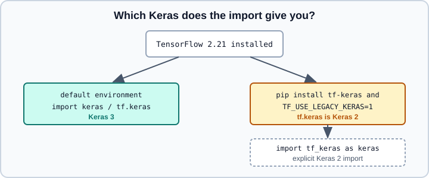

Migrating from Keras 2 to Keras 3
|
This content was generated with the assistance of AI and should be verified against the official documentation before being relied on in production. |
Keras 3 is a rewrite of Keras as a multi-backend library that runs on TensorFlow, JAX and PyTorch. Since TensorFlow 2.16 it is also what tf.keras resolves to, so code and books written for the Keras 2 era (tf.keras up to TensorFlow 2.15) can break in subtle ways. This page lists what changed, what the fallback package tf_keras is for, and how to port the most common patterns. The overview of the current package layout is on Keras 3 Overview, multi-backend usage on Keras Multi-Backend, and the older TensorFlow 1 history on Migrating from TensorFlow 1.
It targets Python 3.13, TensorFlow 2.21 with Keras 3.15 (TensorFlow 2.22 is labelled upcoming) and scikit-learn 1.9, and was checked against the official documentation on 2026-10-30. Examples were run on Python 3.13 with TensorFlow 2.21, Keras 3.15, tf-keras 2.21.0 and scikit-learn 1.9 (CPU) on 2026-10-31.
Which Keras do you get?
The release notes for TensorFlow 2.16.1 state that Keras 3 became the default Keras version. In practice:
-
import kerasgives Keras 3. -
With TensorFlow 2.16 or later and no special configuration,
tf.kerasalso resolves to Keras 3. -
tf_kerasis a separate package that contains the Keras 2 code (version series 2.16 and later were published alongside TensorFlow) for projects that cannot migrate yet.

To keep Keras 2 behaviour under tf.keras, install tf-keras and set an environment variable before TensorFlow is imported. The release notes warn that the variable applies to every package in the Python process.
pip install tf-keras
export TF_USE_LEGACY_KERAS=1
python -c "import tensorflow as tf; print(tf.keras.__name__)" # tf_keras.api._v2.kerasimport os
os.environ["TF_USE_LEGACY_KERAS"] = "1" # must be set before importing tensorflow
import tensorflow as tf # tf.keras now resolves to tf_keras (Keras 2)
import tf_keras as keras # or import tf_keras directly, which is more explicitThe tf-keras release that matches TensorFlow 2.21 is 2.21.0: its version numbers follow TensorFlow, while its API stays the Keras 2 API. With TF_USE_LEGACY_KERAS=1, tf.keras.__name__ is tf_keras.api._v2.keras and tf.keras.__version__ does not exist (read tf_keras.__version__ instead). Check https://pypi.org/project/tf-keras/ before choosing it for new work. Treat tf_keras as a bridge, not a destination: new features land in Keras 3.
Imports and namespaces
The simplest migration step is to stop writing tf.keras and import Keras directly.
| Keras 2 era | Keras 3 |
|---|---|
|
|
|
|
|
|
With TensorFlow installed, tf.keras still works in a default environment and is the same Keras 3, but importing keras makes the dependency explicit and works unchanged on the JAX and PyTorch backends.
Dated table of renames and removals
The table lists items documented in the official migration guide, verified on 2026-10-30 against Keras 3.15. "Port" says what to use instead.
| Keras 2 behaviour or API | Keras 3 | Port |
|---|---|---|
|
SavedModel is not written by |
Use |
|
Removed |
|
|
Removed |
Copy the implementation into your code base |
|
Removed |
Copy the implementation if needed |
Symbolic |
Removed; |
Move the call into |
Layer attributes |
Removed |
Track metrics explicitly |
RNN arguments |
Removed |
Reshape or restructure the inputs |
|
Removed |
Call |
Autograph active inside |
Off by default |
Use |
Per-output loss values reported by |
Not reported automatically |
Add the losses to |
Nested dictionaries as functional-model inputs or outputs |
Rejected beyond one level |
Flatten to a list, tuple or single-level dict |
|
Not allowed |
Use an optional argument with a default of |
|
|
Pass |
|
Not tracked |
Use |
Two further items matter but are explained in more depth below: the optimizer and the train_step rewrite. For the current layer, loss and metric catalogues see Core Keras Layers, Losses and Metrics.
From TensorFlow ops to keras.ops
A Keras 3 layer that must run on any backend cannot call tf.* functions on symbolic tensors during functional model construction. Replace them with keras.ops, which mirrors a large part of NumPy plus neural-network operations.
| TensorFlow | keras.ops |
|---|---|
|
|
|
|
|
|
|
|
|
|
|
|
|
|
|
|
|
|
|
|
|
|
import keras
from keras import layers, ops
class SquaredNorm(layers.Layer):
"""Backend-agnostic: only keras.ops inside call."""
def call(self, x):
return ops.sum(ops.square(x), axis=-1, keepdims=True)
inputs = keras.Input(shape=(8,))
outputs = SquaredNorm()(inputs) # works with symbolic tensors on any backend
model = keras.Model(inputs, outputs)
print(model.output_shape) # (None, 1)Source: https://keras.io/api/ops/
Code that stays inside TensorFlow can keep using tf.* in a layer’s call when run on the TensorFlow backend, but it will not work on JAX or PyTorch, and symbolic construction can fail. The wider backend story is on Keras Multi-Backend.
Model saving and export
This is the change that breaks the most scripts. The Keras 3 native format is a zip archive with the extension .keras containing a JSON configuration, a weights file and metadata (including the Keras version). Full-model saving to a SavedModel directory is no longer what model.save does; serving artifacts come from model.export.
| Older books and Keras 2 tutorials | Keras 3.15 |
|---|---|
|
|
|
|
|
|
|
Wrap it: |
Source: https://keras.io/guides/serialization_and_saving/ and https://keras.io/guides/migrating_to_keras_3/
import keras
model = keras.Sequential([keras.Input(shape=(4,)), keras.layers.Dense(2)])
model.save("my_model.keras") # architecture + weights + compile + optimizer state
restored = keras.models.load_model("my_model.keras")
model.save_weights("my_model.weights.h5") # weights only
model.load_weights("my_model.weights.h5")
model.export("exported_model") # SavedModel for serving (TensorFlow backend)
# Reload a SavedModel as an inference-only layer
layer = keras.layers.TFSMLayer("exported_model", call_endpoint="serving_default")Source: https://keras.io/guides/serialization_and_saving/ and https://keras.io/guides/migrating_to_keras_3/
Custom classes must be findable at load time because the .keras file stores their configuration but not their Python code. Register them with @keras.saving.register_keras_serializable(package="MyPkg"), pass custom_objects= to load_model, or use keras.saving.custom_object_scope. A custom layer with non-primitive constructor arguments (for example sublayers) needs get_config and a from_config class method. The complete walk-through is on Saving Keras Models, with SavedModel details on SavedModel and Signatures, checkpoints on Training Checkpoints, and an interchange view on ONNX and Interoperability.
Lambda layers and safe_mode
Keras 2 tutorials often wrap arbitrary Python in keras.layers.Lambda. A Lambda layer serializes Python bytecode, which makes loading an untrusted model file equivalent to running untrusted code. Keras 3 therefore loads models in a safe mode by default that refuses to deserialize such code. The migration guide itself does not discuss this; the behaviour below follows the load_model documentation, and with Keras 3.15 loading a saved Lambda model with the default safe_mode=True raises a ValueError.
-
Prefer replacing a
Lambdawith a small subclassed layer that implementscallandget_config; it is portable and loads under the default safety settings. -
Only when you fully trust the file and cannot rewrite the layer, load with the
safe_mode=Falseargument ofload_model, or enable unsafe deserialization through the Keras saving utilities. Never do this with files from the internet.
import keras
from keras import ops
@keras.saving.register_keras_serializable(package="demo")
class Scale(keras.layers.Layer):
"""Replaces keras.layers.Lambda(lambda x: x * factor)."""
def __init__(self, factor=2.0, **kwargs):
super().__init__(**kwargs)
self.factor = factor
def call(self, x):
return ops.multiply(x, self.factor)
def get_config(self):
return {**super().get_config(), "factor": self.factor}
model = keras.Sequential([keras.Input(shape=(3,)), Scale(3.0)])
model.save("scaled.keras")
reloaded = keras.models.load_model("scaled.keras") # no safe_mode override neededOptimizers
Keras 3 ships a new optimizer implementation. The optimizers listed in the API reference include SGD, RMSprop, Adam, AdamW, Adadelta, Adagrad, Adamax, Adafactor, Nadam, Ftrl, Lion, Lamb, Muon, plus wrappers such as LossScaleOptimizer. Learning-rate schedules live in keras.optimizers.schedules and are passed as the learning_rate.
Things to check when porting:
-
The Keras 2
tf.keras.optimizers.legacynamespace has no counterpart: in Keras 3.15, creatingkeras.optimizers.legacy.Adam()(ortf.keras.optimizers.legacy.Adam()) raises anImportErrorthat points totf_kerasandTF_USE_LEGACY_KERAS. Scripts that selected legacy optimizers for speed on Apple silicon or for exact old semantics must drop that import or stay ontf_keras. -
Custom optimizers written against the Keras 2
_resource_apply_densestyle must be rewritten to the Keras 3 base class, which definesbuild,update_stepandget_configand has no_resource_apply_dense. -
Optimizer state saved in Keras 2 checkpoints does not transfer to Keras 3 optimizers; plan to restart the optimizer state.
-
Gradient clipping, weight decay, exponential moving averages and gradient accumulation are constructor options of the optimizer base class in Keras 3.15:
weight_decay,clipnorm,clipvalue,global_clipnorm,use_ema,ema_momentum,ema_overwrite_frequency,loss_scale_factorandgradient_accumulation_steps(see Optimizers and Learning-Rate Schedules).
Source: https://keras.io/api/optimizers/
import keras
schedule = keras.optimizers.schedules.ExponentialDecay(
initial_learning_rate=1e-2, decay_steps=10_000, decay_rate=0.9
)
optimizer = keras.optimizers.SGD(learning_rate=schedule, momentum=0.9)
model = keras.Sequential([keras.Input(shape=(4,)), keras.layers.Dense(1)])
model.compile(optimizer=optimizer, loss="mse", jit_compile=False)Source: https://keras.io/api/optimizers/
For how the optimizer family relates to the theory, see Optimizers and Learning-Rate Schedules.
Custom train_step and training loops
TensorFlow-specific training code does not run on other backends. The migration guide recommends:
-
If you only change how the loss is computed, override
compute_loss(self, x=None, y=None, y_pred=None, sample_weight=None), which is backend-agnostic, instead oftrain_step. -
If you need the gradient step, write one version per backend and choose it from the active backend; the TensorFlow version uses
tf.GradientTape, the JAX version a statelessjax.value_and_grad, the PyTorch versionloss.backward().
import keras
class WeightedMSE(keras.Model):
def compute_loss(self, x=None, y=None, y_pred=None, sample_weight=None, **kwargs):
errors = keras.ops.square(y - y_pred)
return keras.ops.mean(errors * 2.0) # same code on TensorFlow, JAX and PyTorch
inputs = keras.Input(shape=(4,))
outputs = keras.layers.Dense(1)(inputs)
model = WeightedMSE(inputs, outputs)
model.compile(optimizer="adam")Details and full examples: Customizing fit() with train_step and Writing a Training Loop from Scratch.
Random numbers are stateless
keras.random functions are stateless: calling one twice with seed=123 returns the same values twice. TensorFlow’s tf.random functions are stateful. A layer that needs fresh randomness on every call should hold a keras.random.SeedGenerator and pass it as the seed; a plain Python integer that is incremented inside call is frozen into the compiled graph.
import keras
class AddNoise(keras.layers.Layer):
def __init__(self, scale=0.1, **kwargs):
super().__init__(**kwargs)
self.scale = scale
self.seed_generator = keras.random.SeedGenerator(1337)
def call(self, x, training=False):
if not training:
return x
noise = keras.random.normal(keras.ops.shape(x), stddev=self.scale, seed=self.seed_generator)
return x + noisescikit-learn wrappers: legacy wrappers, SciKeras and keras.wrappers
Keras 2 offered tf.keras.wrappers.scikit_learn.KerasClassifier and KerasRegressor. They were deprecated and are absent from Keras 3. The community project SciKeras (scikeras) took over their role for years; it belongs to the Keras 2 era and is treated as legacy here, so check its repository status before adopting it in new code and prefer the built-in wrappers below.
Keras 3.15 documents its own scikit-learn compatible wrappers in keras.wrappers: SKLearnClassifier, SKLearnRegressor and SKLearnTransformer (a scikit-learn transformer, not a deep-learning Transformer). All share the signature (model, warm_start=False, model_kwargs=None, fit_kwargs=None). The model argument is either a compiled Keras model, which is cloned before fitting unless warm_start=True, or a callable that builds and compiles a model from X and y. The classifier one-hot encodes y before calling a builder, so the builder sees y with shape (n_samples, n_classes) and the model must use categorical_crossentropy. In Keras 3.15 the estimator’s __sklearn_clone__ does not copy fit_kwargs, so any scikit-learn tool that clones it (cross_val_score, GridSearchCV, Pipeline inside them) trains with the fit defaults (one epoch, progress bar on); pass the arguments through params= of the scikit-learn function, or call fit(X, y, epochs=...) directly.
import keras
from keras.wrappers import SKLearnClassifier
from sklearn.datasets import make_classification
from sklearn.model_selection import cross_val_score
def build_model(X, y, hidden=(32, 32)):
# The wrapper one-hot encodes y before calling the builder, so y has shape (n, n_classes)
n_classes = y.shape[1] if y.ndim > 1 else 1
model = keras.Sequential([keras.Input(shape=(X.shape[1],))])
for units in hidden:
model.add(keras.layers.Dense(units, activation="relu"))
model.add(keras.layers.Dense(n_classes, activation="softmax"))
model.compile(loss="categorical_crossentropy", optimizer="adam", metrics=["accuracy"])
return model
X, y = make_classification(n_samples=500, n_features=10, n_informative=5, random_state=0)
est = SKLearnClassifier(model=build_model, model_kwargs={"hidden": (16, 16)})
# Keras 3.15 drops fit_kwargs when scikit-learn clones the estimator (cross_val_score does),
# so pass the fit arguments through params instead
print(cross_val_score(est, X, y, cv=3, params={"epochs": 20, "verbose": 0}).mean()) # 0.83 to 0.88, varies between runsBecause the page does not state in which Keras release the wrappers appeared, check the Keras release notes before depending on them in a pinned environment. For pipelines, cross-validation and parameter cloning, see Pipelines, Cross-Validation and Parameters and clone.
A migration checklist
-
Pin versions: Python 3.13, TensorFlow 2.21, Keras 3.15; decide whether
tf_kerasis needed temporarily. -
Replace
tf.kerasimports withimport keras. -
Run the test suite; fix
SavedModelsaves first (.kerasandexport). -
Replace
Lambdalayers with subclassed layers. -
Replace
tf.*calls inside layers bykeras.ops. -
Rewrite custom
train_stepcode withcompute_loss, or keep it TensorFlow-only on purpose. -
Revisit optimizers, learning-rate schedules, mixed precision and
jit_compile. -
Retrain or reload weights; compare metrics against the Keras 2 baseline.
-
Only then consider running on JAX or PyTorch.
Compare with how PyTorch handles state and serialization in Saving and Loading, and for choosing between stacks see Choosing a Framework.
References
-
Migrating your Keras 2 code to Keras 3 - https://keras.io/guides/migrating_to_keras_3/
-
Keras 3 announcement and overview - https://keras.io/keras_3/
-
Save, serialize and export models - https://keras.io/guides/serialization_and_saving/
-
Optimizers - https://keras.io/api/optimizers/
-
Scikit-learn API wrappers - https://keras.io/api/utils/sklearn_wrappers/
-
keras.ops- https://keras.io/api/ops/ -
Making new layers and models via subclassing - https://keras.io/guides/making_new_layers_and_models_via_subclassing/
-
TensorFlow release notes - https://github.com/tensorflow/tensorflow/blob/master/RELEASE.md
-
tf-kerason PyPI - https://pypi.org/project/tf-keras/ -
SciKeras - https://github.com/adriangb/scikeras